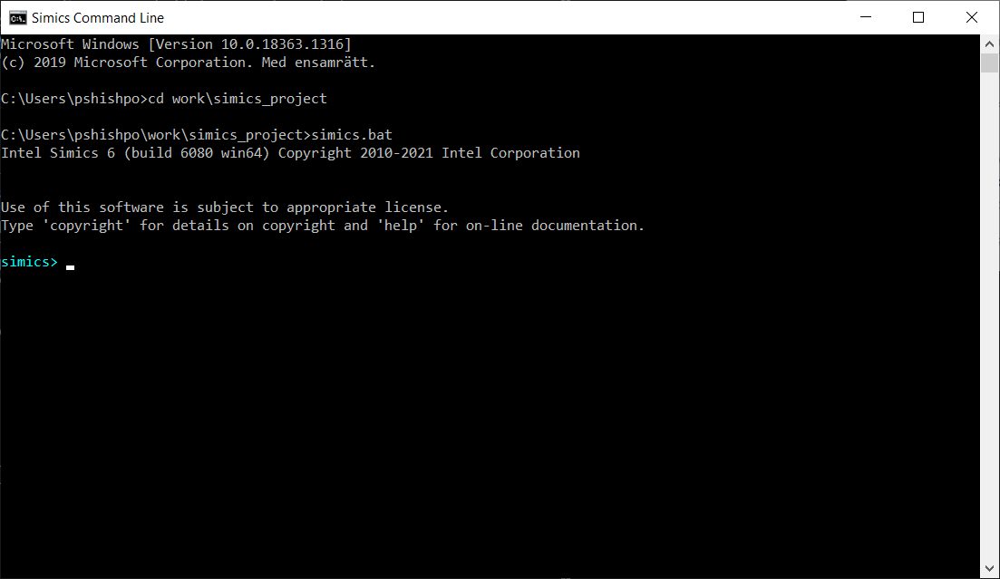

This section describes how to:
We assume that Simics has already been installed and a Simics project directory has already been created. The screenshots below were taken on Windows but the Linux version of Simics behaves similarly. For brevity, we may refer to Simics project directory as a project directory.
First, let’s get to command prompt. On Windows, this can be done by pressing Win+R keys (i.e., pressing R key while holding Windows key pressed) and entering “cmd” in the popped-up window. For Linux, please refer to the documentation of your Linux distribution about the instructions how to get access to command prompt.
Once command prompt window is available, navigate to a previously created directory containing Simics project:
To start Simics and to get its command prompt just run the simics.bat batch file (on Linux, the simics shell script is to be used instead by entering the ./simics command):

Let’s create a target machine inside Simics. We will do it by using:
targets directory inside a Simics project directory run-command-file Simics command Simics command files, usually having the .simics file extension, are often used to automate and script operations in Simics. Particularly, Simics scripts are often used to automate the creation of target machines inside Simics.
Simics comes with a few Simics scripts for creation of target machines. The scripts are available in the targets directory inside a Simics project directory.
The usual way to run Simics script in Simics is to use the run-command-file Simics command and provide it with the path to the Simics script as an argument, like in this example: run-command-file targets/qsp-x86/firststeps.simics. In the example, the targets/qsp-x86/firststeps.simics part is a relative path to a Simics script located in the targets directory inside the Simics project directory.
To create a target machine in Simics we will use the targets/qsp-x86/firststeps.simics Simics script from the previous example. It will create a simple x86 target machine. To create the target machine, just run the script with the run-command-line Simics command:
simics> run-command-file targets/qsp-x86/firststeps.simics
NAPT enabled with gateway 10.10.0.1/24 on link ethernet_switch0.link.
NAPT enabled with gateway fe80::2220:20ff:fe20:2000/64 on link ethernet_switch0.link.

On the screenshot, we can see a few informational messages regarding the target network setup.
A few new windows have popped up after a target machine has been created. The most important are:
A text terminal window connected to a serial port of the target machine:
A graphical display window connected to a graphical device of the target machine:
One of the ways to start the newly created target machine is to use the run Simics command. Simics target machines have no power buttons. Instead, the machines are configured to start immediately once simulation is started with the run Simics command:
simics> run
running>

Sometimes, there may be messages printed to Simics command line window:

These messages are coming from device models which, as messages report, may not simulate certain features. Simics models often use a pragmatic approach and don’t simulate features which are not relevant for simulated machines, for example, thermal control. So, the messages are usually harmless.
As simulation progresses, the target machine will boot Linux operating system (this can take up to several minutes):

The login to the system is done automatically. After the login one can interact with the operating system running on the target machine by running commands at the text console window. Here is a sample session when pwd and uname -a Linux commands were executed on the simulated machine after the login:

One can stop simulation, thus pausing a target machine, by running the stop command on Simics command prompt:
running> stop
simics>
The target machine is paused now. But it can be resumed by entering the run Simics command again:
running> stop
simics> run
running>

To quit Simics just enter the quit command:
running> quit

To sum up, in this section we created a x86 target machine, started it and interacted with the operating system running on the target machine. We learned how to start and stop simulation as well as exit the simulator.